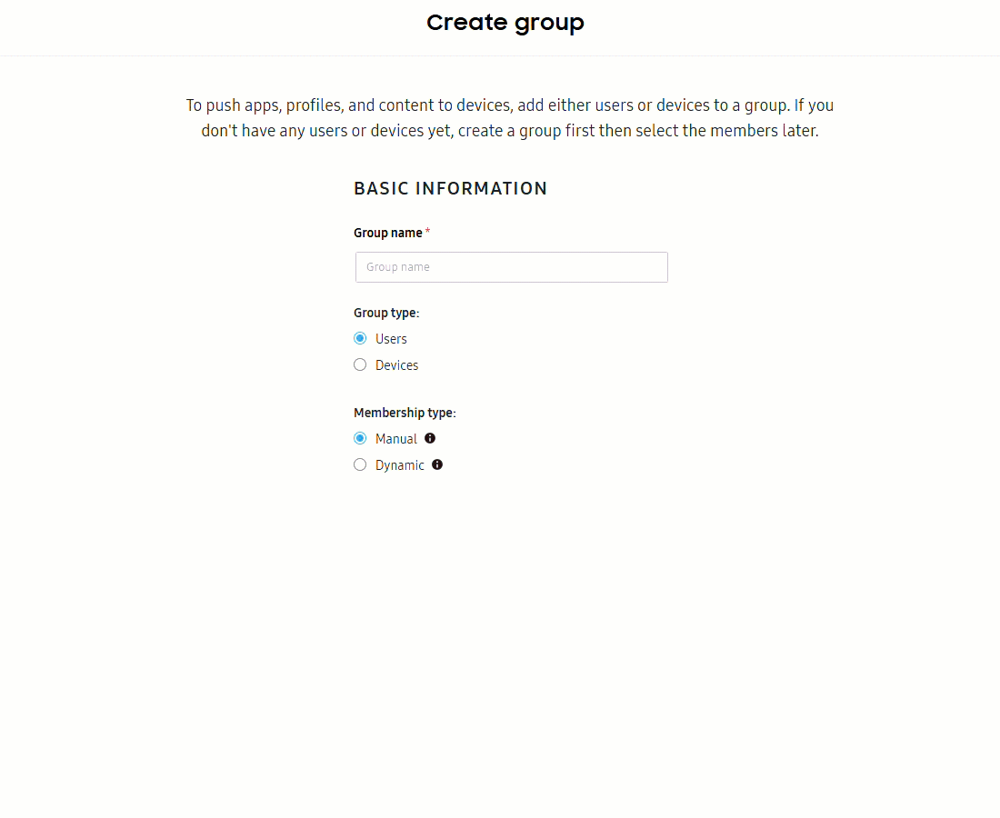

Knox Manage 25.11 release notes (new console)
Last updated November 19th, 2025
New
Introducing dynamic groups
You can now create dynamic groups by defining rules based on user or device attributes. Group members are automatically added or removed based on rule criteria. Additionally, profiles, apps, and content belonging to a dynamic group are automatically assigned or unassigned from group members.
You can use the new simple mode to make rules from filters, manually configure rules using a combination of attributes and operators, or use syntax mode to write rule syntax in the MVFLEX Expression Language (MVEL). You can test your rule criteria on up to 25 members who meet the rule criteria to confirm that the dynamic group will include them.
Additionally, you can use the ACTIONS menu to edit the dynamic group’s name and rule criteria, or duplicate it to update its membership type and group type. See Manage groups to learn more.

New policies and settings
With this release, the following Android Enterprise policies, settings, and sub-settings are added to the new console.
To find a specific setting, go to Profiles and policies > select a profile > Edit profile and start typing the setting name in the Search policy settings field.
| Setting | Description |
|---|---|
| Upload contact list | Allows you to download a Microsoft Excel template to use to upload contact lists. |
| Certificate | Allows you to use new certificate authority (CA) certificates and configure the certificate settings. |
| Set Default Lock Screen | Users must use the password you set to unlock their device. |
| Access Point Network (APN) | Sets an APN policy, which is a preset APN configuration made of settings such as access point type, proxy, and roaming protocol, to manage cellular data connectivity. |
| Data connection control during roaming | Allows a data connection while using roaming service. |
| 802.1xEAP | Add the 802.1xEAP Security Type for Wi-Fi. |
| Shortcut | Sets a shortcut policy to manage the addresses you bookmark for users. |
| Google account | Configures Google accounts that automatically populate on devices when device users sign in to Google services. |
Knox Service Plugin
The new console now supports Knox Service Plugin. Knox Service Plugin allows you to use a wide range of Knox features in your EMM consoles.
To configure Knox Service Plugin policies in the new console, go to the Profiles and policies page > select a profile > Edit profile > Knox Service Plugin.
See Android Enterprise policies to learn more.
Manage sync conflicts
Sync conflicts occur when there is a discrepancy between user or group data in Knox Manage and the third-party identity provider (IdP) Knox Manage is connected to.
To solve these conflicts, the new Manage sync conflicts page allows you to temporarily delete users or groups that can’t sync. You can then resolve each conflict in advance so that they automatically sync again during the next schedule.
See Configure identity providers to learn more.
Enhancements to the directory groups feature
The user management page for directory groups now has a SYNC ENABLED column that indicates if the groups are being synced with your third-party identity provider (IdP).
The ACTIONS dropdown menu includes three new actions:
- Sync users
- Enable sync
- Disable sync
See Manage groups to learn more.
Streamlined tab-based navigation on Certificates pages
The Certificates page is now organized into two tabs: UPLOADED CERTIFICATES and TEMPLATES AND CA. To open the sliding panel and view more details, click a certificate name on the UPLOADED CERTIFICATES tab or a template name on the TEMPLATES AND CA tab.
You can now access the Manage Certificate Authority (CA) page by going to the ACTIONS dropdown menu on the TEMPLATES and CA tab. Here, you can connect to your certificate authority, as well as edit or delete it through the ACTIONS dropdown menu. See Manage certificates to learn more.
New dashboard widgets
The Knox Manage dashboard can now display User status, Top contents assigned, and Latest directory sync widgets. You can click the to view details for each widget. Click to configure which widgets you’d like to display on the dashboard.
See Customize the dashboard to learn more.
Technical support access permissions
The Knox Manage: General settings page now displays the TECHNICAL SUPPORT ACCESS section in the Preferences tab. You can select the checkbox to allow the Samsung Knox technical support team to access your Knox Manage console for a certain amount of time, with your permission, for troubleshooting or testing purposes. See Configure general settings to learn more.
New activity logs
The Activity logs page displays the following new tabs which provide additional log information:
- CERTIFICATES: Displays the certificate issue history.
- KNOX SERVICE PLUGIN: Shows the message history of the Knox Service Plugin. The plugin, when installed on your devices, sends messages related to licensing and policy payloads.
- API INTEGRATION: Displays the authentication history of your API clients.
- API CLIENT: Displays all of the logs for the API clients you generated in the Knox Manage console.
For more information about any of the following logs, see Manage the activity logs.
Search by additional filters in the activity log
Previously, you could search for activity log events only by description. In the ACTIVITY tab, you can now search by device name, result, log type, date, and time. The activity log also provides more details through additional filters such as device name and log type.
To learn more about a log, click View details.
New device logs
The new Device logs page displays the following new tabs related to the history and activity of devices in your fleet:
- REQUESTED ACTIONS: This tab displays all pending device actions. This enables you to view any unsuccessful requests and request the action again.
- DIAGNOSTICS: This tab displays device diagnostics. To collect the diagnostics log for a given device, navigate to the Devices page and select a device. Then click ACTIONS > Perform action on device > DIAGNOSTICS > Collect device diagnostics log. Its diagnostics display in the DIAGNOSTICS tab.
New access to the device actions log
Previously, you could find the DEVICE ACTIONS tab when you selected a device from the Devices page then clicked ACTIONS > View device log. The old log displayed the history of all actions performed on a single device.
The updated tab on the Device logs page displays logs from multiple devices at once. You can also now search for a specific device log or sort logs by device platform.

New group action logs
The new Group action logs page displays all of the actions performed on groups. You can search for a specific log by date or group name. Click the number under DEVICES to view a group’s device list.
You can also view the group action log by navigating to the Groups page, then clicking a group name > VIEW GROUP ACTION LOG.
Add and manage API clients
Knox developers can now add and manage API clients to authenticate API calls in the new console. Any API clients you generate in the new console can be managed in the original console. Similarly, any clients you generate in the original console can be managed in the new console.
Updates
Enhancements to policy creation
Change to creation of reusable policy settings
Previously, any policies settings that you created were automatically saved for reuse. Starting with 25.11, policy settings that you configure on the CREATE PROFILE tab on the Profiles and policies page are not automatically reusable. Instead, only policies that you set on the CREATE POLICY tab are reusable. See Create a profile to learn more.
Search enhancements for finding policy settings to reuse
Previously, to reuse a policy setting when you created or edited a profile, you had to go through each policy separately on the Configure screen, then search for settings you previously configured within that policy.
The 25.11 release adds new search enhancements and UI prompts, allowing you to more quickly find and use existing policy settings.
For more information on finding policies to reuse, see Create a profile.

See all relevant settings during policy search
Previously, when you searched for policy settings on the Configure screen, you could only view one result with each search.
The new UI enhancements for profile creation make it easier to search for policy settings. Once you enter a setting in the search bar, the results display all relevant policy settings at once in the left sidebar. If a result is a sub-setting, then the parent setting is highlighted. This allows you to enable the correct parent setting and view the sub-setting.
Guidance for new users
Soft guides now direct new users through the process of creating a profile for the first time.
Enhancements to the kiosk builder
Updates to kiosk search
Previously, when you searched for an app in the kiosk builder, you had to type the full name of the app and click to view relevant apps. With 25.11, the kiosk builder now prompts you with relevant results when you enter the first few letters of an app’s name. You can now also sort apps by alphabetical order, instead of by recently updated.
Guided steps for new users
When you create a kiosk for the first time, the kiosk builder highlights the required steps and actions with interactive blue dot prompts across the UI.
eSIM management options
You can now activate and deactivate eSIM cellular plans from the ACTIONS dropdown menu on the Devices page. Devices must be in the Enrolled, Disconnected, or Expired state. See View device details to learn more.
Previously, when unenrolling a device, the device’s eSIM status was not affected. Now, you can select Remove existing eSIMs on the Unenroll device dialog to remove the eSIM bound to the device during unenrollment. See Run an action on a device to learn more.
Edit directory type groups
You can now edit directory type groups from the Groups page, allowing you to change the group name, sync target, and select additional options for the group, like automatically assigning a profile and apps when a user is added. See Manage groups to learn more.
Deprecated
Notice of deprecation of Android Enterprise policies
With the 25.11 release, the following policies, settings, and sub-settings are removed from the new console:
- Notification > Show notification if event is triggered
- Notification > Show notification if event is disabled
- Notification > Remove notifications from Quick panel
- Hardware controls > Use microphone > Use S Voice
On this page
Is this page helpful?